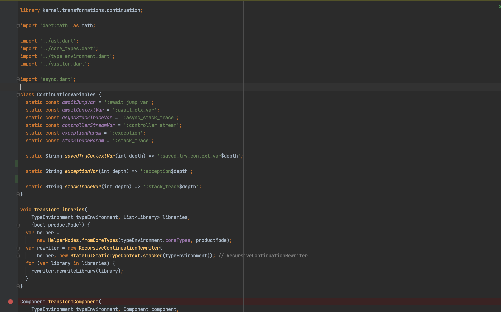
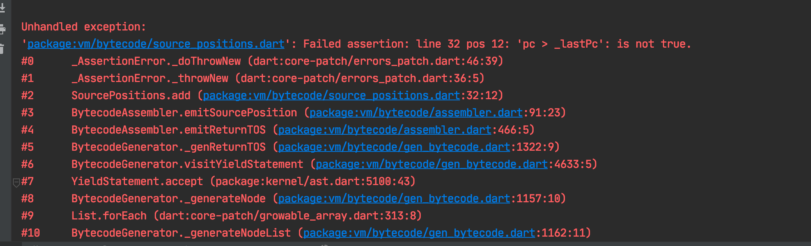
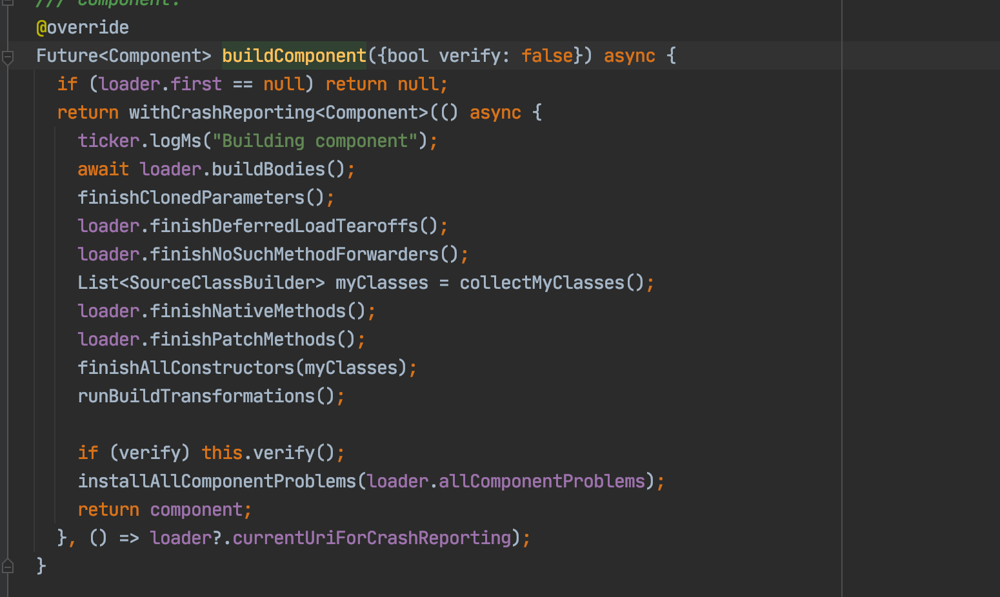
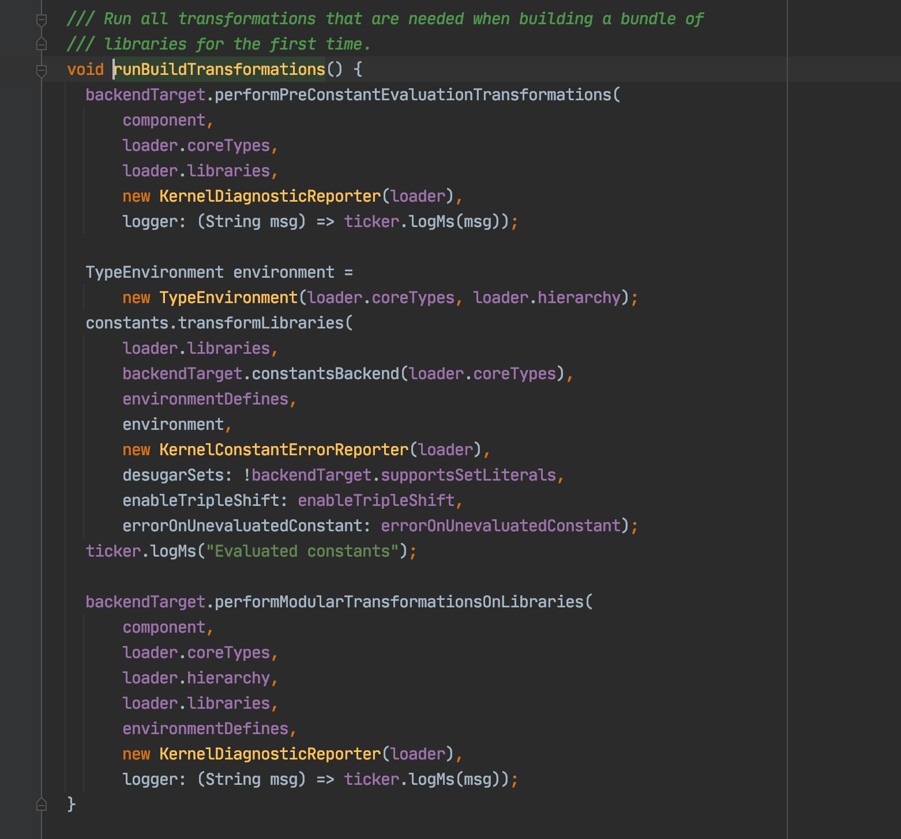
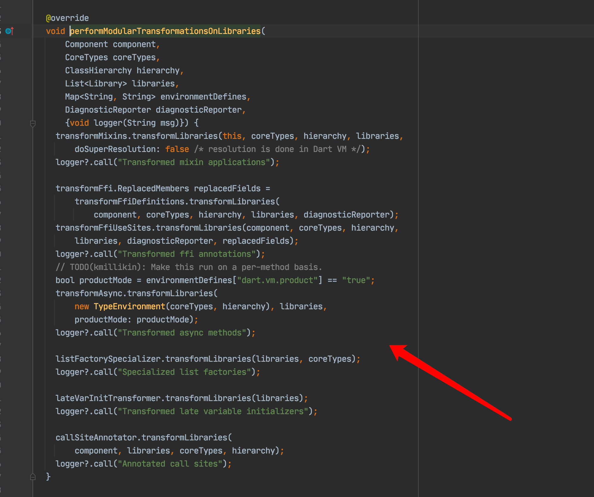
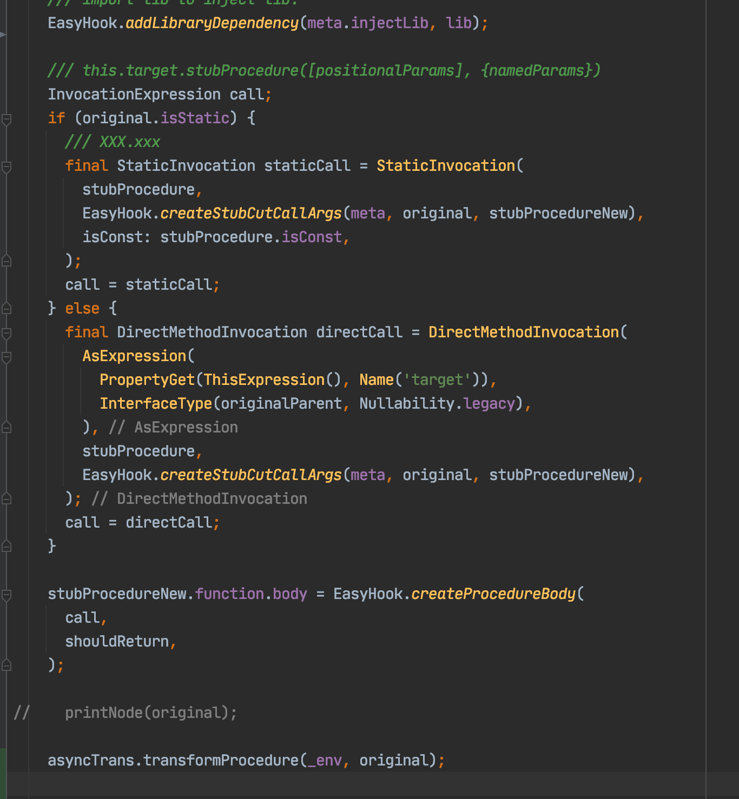

Problem: phenomenon that cannot be fully covered
When adapting Hook Coverage to dynamically generate bytecode logic, an error was encountered (under the scenario of full pile insertion). The initial situation was that the full amount of Hook code did not take effect:
input keys []
[info]::Trans--2020-11-27 14:16:04.755980: Transformer Debug Open.
[info]::Trans--2020-11-27 14:16:04.759208: Load Pass: hook
[info]::Trans--2020-11-27 14:16:05.074541: print hook_coverage::HookAllMethod start
[389]@[346] [346] #C2
@[358] [358] #C5
class HookAllMethod extends dart.core::Object {
[-1] synthetic constructor () → hook_coverage::HookAllMethod*
: [-1] super dart.core::Object:: [-1]()
...
Hook’s adaptation repair
According to the debugging investigation, Hook did not search for the corresponding library when searching for the corresponding package name. It is associated with the dynamic execution of modifying the dynamic package name. Therefore, the problem lies in this part. Because the package name was modified, the corresponding information was not searched. Hook has a problem with the package name generated by the Hook Macro macro for the full amount of piles. Hook’s pile insertion point was executed after performing the dynamic modification of the package name. Hook did not find the same code as the original package name. The logic of dynamic modification of the package name is as follows:
for (Library library in result.component.libraries) {
String packageName = "${library.importUri}";
if (isDynamicLib(library, options) &&
!packageName.startsWith("package:flutter/") &&
!reflectionUris.contains(packageName)) {
library.importUri = Uri.parse(
"package:fix_" + packageName.substring("package:".length),
);
}
}
If you find the problem, Hook’s adaptation here is not a problem. There are two options:
- Put the stub point of Hook in the Dart language from before modifying the package name.
- Adapt within the TransformerTemplate, and automatically add fix_ prefix to all written Hook logic when it is recognized as a dynamic package.
However, after the success of generating the full amount of piles, a new problem occurred, and a compilation error occurred during the period when ByteCode was generated.
Compilation error generated by genByteCode
Unhandled exception:
NoSuchMethodError: The method '[]' was called on null.
Receiver: null
Tried calling: [](":async_stack_trace")
#0 Object.noSuchMethod (dart:core-patch/object_patch.dart:53:5)
#1 Frame.getSyntheticVar (package:vm/bytecode/local_vars.dart:274:20)
#2 LocalVariables.asyncStackTraceVar (package:vm/bytecode/local_vars.dart:149:10)
#3 BytecodeGenerator._genClosureBytecode (package:vm/bytecode/gen_bytecode.dart:2492:26)
#4 BytecodeGenerator._genClosure (package:vm/bytecode/gen_bytecode.dart:2730:38)
#5 BytecodeGenerator.visitFunctionExpression (package:vm/bytecode/gen_bytecode.dart:3061:5)
#6 FunctionExpression.accept (package:kernel/ast.dart:4318:44)
#7 BytecodeGenerator._generateNode (package:vm/bytecode/gen_bytecode.dart:1159:10)
#8 BytecodeGenerator.visitVariableDeclaration (package:vm/bytecode/gen_bytecode.dart:4552:11)
#9 VariableDeclaration.accept (package:kernel/ast.dart:5292:43)
#10 BytecodeGenerator._generateNode (package:vm/bytecode/gen_bytecode.dart:1159:10)
#11 _GrowableList.forEach (dart:core-patch/growable_array.dart:285:8)
#12 BytecodeGenerator._generateNodeList (package:vm/bytecode/gen_bytecode.dart:1164:11)
#13 BytecodeGenerator.visitBlock (package:vm/bytecode/gen_bytecode.dart:3949:5)
#14 Block.accept (package:kernel/ast.dart:4519:43)
#15 BytecodeGenerator._generateNode (package:vm/bytecode/gen_bytecode.dart:1159:10)
#16 BytecodeGenerator.defaultMember (package:vm/bytecode/gen_bytecode.dart:924:13)
#17 TreeVisitor.visitProcedure (package:kernel/visitor.dart:232:39)
#18 Procedure.accept (package:kernel/ast.dart:2140:40)
#19 visitList (package:kernel/ast.dart:7073:14)
#20 BytecodeGenerator.visitLibrary (package:vm/bytecode/gen_bytecode.dart:231:5)
#21 generateBytecode.<anonymous closure> (package:vm/bytecode/gen_bytecode.dart:107:27)
After opening the full amount of bytecode inserting piles, I saw the Log as shown above. It is actually difficult to see any specific problems from the place where the Log and error are generated. This is due to the fact that the ByteCode Generator of Dart itself is not good. Visitor and Transformer, which should have a very clear structure, have become very procedural and state-oriented, and have difficulties in debug the code.
From the point of view of Log, it is actually to deal with asynchrony when a _genClosureBytecode generates closure bytecode, and to find the problem of asynchronous variables.
Problem solving
Actual code location
int _genClosureBytecode(
LocalFunction node, String name, FunctionNode function) {
_pushAssemblerState();
locals.enterScope(node);
final savedParentFunction = parentFunction;
parentFunction = enclosingFunction;
final savedIsClosure = isClosure;
isClosure = true;
enclosingFunction = function;
final savedLoopDepth = currentLoopDepth;
currentLoopDepth = 0;
final savedInferredTypesAttribute = inferredTypesAttribute;
inferredTypesAttribute = null;
if (function.typeParameters.isNotEmpty) {
functionTypeParameters ??= new List<TypeParameter>();
functionTypeParameters.addAll(function.typeParameters);
functionTypeParametersSet = functionTypeParameters.toSet();
}
List<Label> savedYieldPoints = yieldPoints;
yieldPoints = locals.isSyncYieldingFrame ? <Label>[] : null;
closures ??= <ClosureDeclaration>[];
final int closureIndex = closures.length;
final closure = getClosureDeclaration(node, function, name, closureIndex,
savedIsClosure ? parentFunction : enclosingMember);
closures.add(closure);
final int closureFunctionIndex = cp.addClosureFunction(closureIndex);
_recordSourcePosition(function.fileOffset);
_genPrologue(node, function);
if (options.causalAsyncStacks &&
parentFunction != null &&
(parentFunction.dartAsyncMarker == AsyncMarker.Async ||
parentFunction.dartAsyncMarker == AsyncMarker.AsyncStar)) {
final savedSourcePosition = asm.currentSourcePosition;
_recordSourcePosition(TreeNode.noOffset);
_genLoadVar(locals.asyncStackTraceVar,
currentContextLevel: locals.contextLevelAtEntry);
_genDirectCall(
setAsyncThreadStackTrace, objectTable.getArgDescHandle(1), 1);
asm.emitDrop1();
asm.currentSourcePosition = savedSourcePosition;
}
Background knowledge
The async and await in Dart are syntax sugars in themselves, which are not mechanisms that can be directly used at the bottom by writing down. In fact, they are supported by generating holes in the Dart layer code. In the Dart pkg/kernel/transformations/continuations.dart, we can see how this syntax sugar is expanded by Transformer in the Kernel layer:

The variables in the diagram are the ones we see in the error stack. An asynchronous method in the Kernel layer will actually be expanded to:
@#C8 final (#lib4::StubCut*) →* dart.async::Future<void>* func = (#lib4::StubCut* stub) → dart.async::Future<void>* /* originally async
*/ {
final dart.async::_AsyncAwaitCompleter<void>* :async_completer = new dart.async::_AsyncAwaitCompleter::<void>();
dart.async::FutureOr<void>* :return_value;
dynamic :async_stack_trace;
dynamic :async_op_then;
dynamic :async_op_error;
dart.core::int* :await_jump_var = 0;
dynamic :await_ctx_var;
function :async_op([dynamic :result, dynamic :exception, dynamic :stack_trace]) → dynamic yielding
try {
#L26:
{
实际的代码处理逻辑
}
dart.async::_completeOnAsyncReturn(:async_completer, :return_value);
return;
}
on dynamic catch(dynamic :exception, dynamic :stack_trace) {
:async_completer.{dart.async::Completer::completeError}(:exception, :stack_trace);
}
:async_stack_trace = dart.async::_asyncStackTraceHelper(:async_op);
:async_op_then = dart.async::_asyncThenWrapperHelper(:async_op);
:async_op_error = dart.async::_asyncErrorWrapperHelper(:async_op);
:async_completer.start(:async_op);
return :async_completer.{dart.async::Completer::future};
};
So the variable to look for from the above error log is actuallyasync_stack_trace-This variable that expands at the Dart layer. Several attempts to fix the logic were made against this information.
Conjecture 1: Generated code fileOffset, fileEndOffset problem

Before fixing the problem, directly debug ByteCode through the Dart Pkg project (see debugging method[How to Debug Dart AST with Dart Hook?]() You will always see an error log with the following contents, so guessing errors may also be fromemitSourcePositionFrom this switch.
It is possible that ByteCode has stricter requirements on the source position of the Kernel layer code, and may require a more accurate location to generate debugging information. Therefore, try to refine the fileOffset and fileEndOffset that generate the Kernel part in TemplateTransformer.
final call = MethodInvocation(
VariableGet(thisPointer, injectType),
Name(stubKey, meta.injectLib),
Arguments(
[],
types:
member.function.typeParameters.isNotEmpty && member is! Constructor
? ir.getAsTypeArguments(
member.function.typeParameters,
member.enclosingLibrary,
)
: [],
)..fileOffset = member.fileOffset,
)..fileOffset = member.fileOffset;
final handler = FunctionExpression(
FunctionNode(
Block(
[
member.function.returnType is VoidType
? ExpressionStatement(call)
: ReturnStatement(call)
..fileOffset = member.fileOffset,
],
)..fileOffset = member.fileOffset,
positionalParameters: [
thisPointer..fileOffset = member.fileOffset,
],
returnType: const DynamicType(),
requiredParameterCount: 1,
)..fileOffset = member.fileOffset,
For example, the above figure adds specific location information to each node, but the errors after the debugger and engine run have not improved.
Conjecture 2: Incomplete type information
Same as above, adding additional type-specific information for each location:
type: FunctionType(
[injectType],
member.function.returnType,
Nullability.legacy,
),
However, the problem has not been solved after the type information is completed.
Conjecture 3: Async is not expanded by code
The syntax sugar that has been popularized in the background knowledge of await and async will be desaccharified after the continuation.dart process, but the full amount of Hook and Coverage piles are all after the desaccharification operation at the front end of the Compiler, so try to advance the code part of Hook Transformer to the continuation process:



I also tried the continuation of the generated FunctionExpression in the Hook Exec process:

But the problem has not been solved.
Problem solved
The problem comes back to comparing the logic of a Kernel without a stake with the logic of applying a stake Kernel in the same part of the code:
if (options.causalAsyncStacks &&
parentFunction != null &&
(parentFunction.dartAsyncMarker == AsyncMarker.Async ||
parentFunction.dartAsyncMarker == AsyncMarker.AsyncStar)) {
final savedSourcePosition = asm.currentSourcePosition;
_recordSourcePosition(TreeNode.noOffset);
_genLoadVar(locals.asyncStackTraceVar,
currentContextLevel: locals.contextLevelAtEntry);
_genDirectCall(
setAsyncThreadStackTrace, objectTable.getArgDescHandle(1), 1);
asm.emitDrop1();
asm.currentSourcePosition = savedSourcePosition;
}
After comparison, it is found that this paragraphcausalAsyncStacksThe logic is that when _genClosureFunction generates a closure, it will look for the parent node of the closure. If it is asynchronous and openscausalAsyncStacksOn the premise of this switch, variables such as async_stack_trace are read from the parent object for error return and frame node calculation.
For example, the actual code for a library procudure is:
{
final dart.async::_AsyncAwaitCompleter<void>* :async_completer = new dart.async::_AsyncAwaitCompleter::<void>();
dart.async::FutureOr<void>* :return_value;
dynamic :async_stack_trace;
dynamic :async_op_then;
dynamic :async_op_error;
dart.core::int* :await_jump_var = 0;
dynamic :await_ctx_var;
dynamic :saved_try_context_var0;
function :async_op([dynamic :result, dynamic :exception, dynamic :stack_trace]) → dynamic yielding
try {
#L2:
{
final #lib7::QuestionArguments* args = let final #lib7::QuestionArguments* #t14723 = #lib8::ModalRoute::of<dart.core::Object*>(context).{#lib9::Route::settings}.{#lib9::RouteSettings::arguments} as #lib7::QuestionArguments* in #t14723.{#lib7::QuestionArguments::==}(null) ?{#lib7::QuestionArguments*} new #lib7::QuestionArguments::() : #t14723;
[yield] let dynamic #t14724 = dart.async::_awaitHelper(#lib9::Navigator::push<#lib10::Animation<dart.core::double*>*>(context, new #lib6::SuccessRoute::(message: message, hasNextQuestion: args.{#lib7::QuestionArguments::hasNextQuestion})), :async_op_then, :async_op_error, :async_op) in null;
final #lib10::Animation<dart.core::double*>* animation = dart._internal::unsafeCast<#lib10::Animation<dart.core::double*>*>(:result);
function listener() → void {
if(animation.{#lib10::Animation::status}.{dart.core::Object::==}(#C4) && animation.{#lib10::Animation::value}.{dart.core::num::<}(0.6)) {
if(args.{#lib7::QuestionArguments::hasNextQuestion}) {
final #lib7::QuestionArguments* nextQuestion = args.{#lib7::QuestionArguments::nextQuestion}();
#lib9::Navigator::pushReplacementNamed<dart.core::Object*, dart.core::Object*>(context, nextQuestion.{#lib7::QuestionArguments::routeName}, arguments: nextQuestion);
}
else {
#lib9::Navigator::popUntil(context, (#lib9::Route<dynamic>* route) → dart.core::bool* => !route.{#lib9::Route::settings}.{#lib9::RouteSettings::name}.{dart.core::String::contains}("sphinx"));
}
animation.{#lib10::Animation::removeListener}(listener);
}
}
animation.{#lib10::Animation::addListener}(listener);
}
dart.async::_completeOnAsyncReturn(:async_completer, :return_value);
return;
}
on dynamic catch(dynamic :exception, dynamic :stack_trace) {
:async_completer.{dart.async::Completer::completeError}(:exception, :stack_trace);
}
:async_stack_trace = dart.async::_asyncStackTraceHelper(:async_op);
:async_op_then = dart.async::_asyncThenWrapperHelper(:async_op);
:async_op_error = dart.async::_asyncErrorWrapperHelper(:async_op);
:async_completer.start(:async_op);
return :async_completer.{dart.async::Completer::future};
}
But after Dart Hook, this code became the execution jump and Hook’s plug-in code:
{
@#C6 final dynamic __func__ = (#lib6::StubCut* stub) → dynamic {
return stub{#lib6::StubCut*}.hook_method452();
};
return hook_coverage::HookAllMethod::hookStaticInject(new #lib6::StubCut::(<dynamic, dynamic>{"__line_no__": "207"}, "package:fix_dev_rpg/src/style_sphinx/success_route.dart", "navigateToNextQuestion", "package:fix_dev_rpg/src/style_sphinx/success_route.dart", null, "navigateToNextQuestion", "hook_method452", <dynamic>[context, message], <dynamic, dynamic>{}, __func__{dynamic}));
}
Processing__func__When this FunctionExpression looks for outer functions, there are no Async related variables (which have been transferred to other execution functions).
Therefore, the way to fix the problem is relatively simple:
if (options.causalAsyncStacks &&
parentFunction != null &&
(parentFunction.dartAsyncMarker == AsyncMarker.Async ||
parentFunction.dartAsyncMarker == AsyncMarker.AsyncStar)) {
if (!parentFunction.body.toString().contains('hook_method')) {
final savedSourcePosition = asm.currentSourcePosition;
_recordSourcePosition(TreeNode.noOffset);
_genLoadVar(locals.asyncStackTraceVar,
currentContextLevel: locals.contextLevelAtEntry);
_genDirectCall(
setAsyncThreadStackTrace, objectTable.getArgDescHandle(1), 1);
asm.emitDrop1();
asm.currentSourcePosition = savedSourcePosition;
}
}
We just need to check that the parent object is an object that we have handled by Dart Hook, in which case we can run through the entire compilation process without checking the relevant logic of casualAsync.
Further More
The efficiency of the full amount of piling + ByteCode bytecode interpreter is quite problematic. We may still need to consider the piling scheme based on the implantation of Injects instead of wrapping Around, so that we can also support line-level code piling in this way.